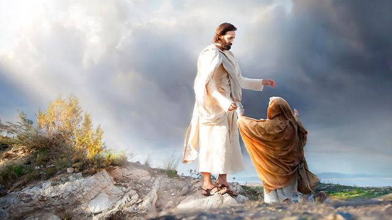
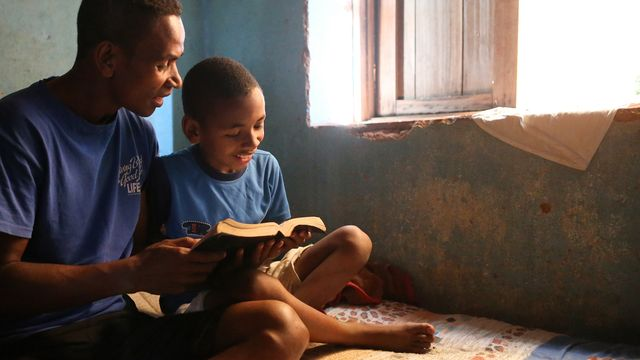

Come, Follow Me · Psalms
Psalm 103:2
What has the Savior done for you that you want to remember?
Watch together · 11:23
Elder David A. BednarElder Patrick Kearon
The video did not load. Try the Church player or select a downloaded copy.
Listen for something you want to do differently next Sunday.Pauses at 3:08 and 7:21
Discuss · Sacrament meeting

How can we help someone who arrives tired, distracted, or alone feel welcome?
Watch together · 4:22
President Paul V. Johnson
What will you study at home and share in class?Partner pause at 2:33
Discuss · Sunday School

How can we help everyone feel comfortable sharing, especially someone new to the scriptures?
At home
What has the Saviordone for you?
How will you preparefor next Sunday?
Psalms moment
Tehillim תהיליםThe Hebrew title of Psalms means “praises.” The word hallelujah calls us to praise the Lord.
Choose a situation.
Which words would you share with this person?
What does this passage teach us about the Savior?
Praise wall · 30–60 seconds
No words yet
Read Psalm 103:1–5What do these blessings tell you about the Savior?
Psalm 119:105 · 1 minute
Read one phrase at a time.
Thy wordis a lamp unto my feet,and a light unto my path.
What word stands out to you?
Find Christ in the Psalms · 1–2 minutes
“The stone which the builders refused is become the head stone of the corner.”
Where are these words used in the New Testament?
Optional · 60–90 seconds
Read the verse, then fill in the blanks.
Thy _____ is a _____ unto my feet,and a light unto my _____.
Which word goes first?
When has a scripture helped you know what to do?
Think about a decision you’re facing as we read.
Thy word is a lamp unto my feet,and a light unto my path.
Choose a phrase to talk about.
Read together
A moment to think
For Sunday, September 6
The Church asks youth and adult Sunday School classes to watch two instruction videos and discuss them on September 6. The six main sections follow that plan. The Psalms activities are optional.
This suggested plan leaves 2:15 for arrivals and transitions. Use an optional activity only if time remains. Finish at 25 minutes.
Suggested teaching pauses. Both complete videos are included; no handouts needed.
Reflect on the Savior’s willingness to forgive.
Consider one way to worship more fully.
Share a study idea with someone nearby.
Select Continue video when you’re ready. If class starts late, turn off pauses and keep a brief discussion after each video.
Choose one if time remains.
Return to lesson takes you back to where you left off.
Test the sound and save both videos. Under Video options, choose Open video file and use your browser’s save command. Then choose Use downloaded video to select the saved file. Use the linked videos so the captions match.
Start the timer when class begins. It keeps running during videos, scripture reading, and time in other tabs. Select the timer to pause it. Refreshing the page resets it.
Select a scripture reference to read the passage here. Close or Escape returns to the lesson. Use ← and → to change sections, Home for the welcome, and F for fullscreen. Use the page’s Fullscreen button to keep pause prompts on screen.
The Church’s instructions direct teachers to the Implementation Guide if technical difficulties prevent showing the videos. Its discussion topics cover worship, belonging, and learning at home.
Pictures from this week’s Come, Follow Me lesson are used with permission. Christ Healing the Sick at Bethesda is by Carl Heinrich Bloch (1883), Brigham Young University Museum of Art. Reverential Return is by Kelsy and Jesse Lightweave. The family photograph and Light and Trees are from The Church of Jesus Christ of Latter-day Saints.
Videos and captions: The Church of Jesus Christ of Latter-day Saints. Questions are adapted from the sources above. Scripture text: King James Version. The note about Tehillim comes from this week’s Come, Follow Me introduction.
Lesson by Outside the World. Core OTW palette ↗
Enable JavaScript to navigate the lesson. You can also open the Church’s videos and discussion guide.